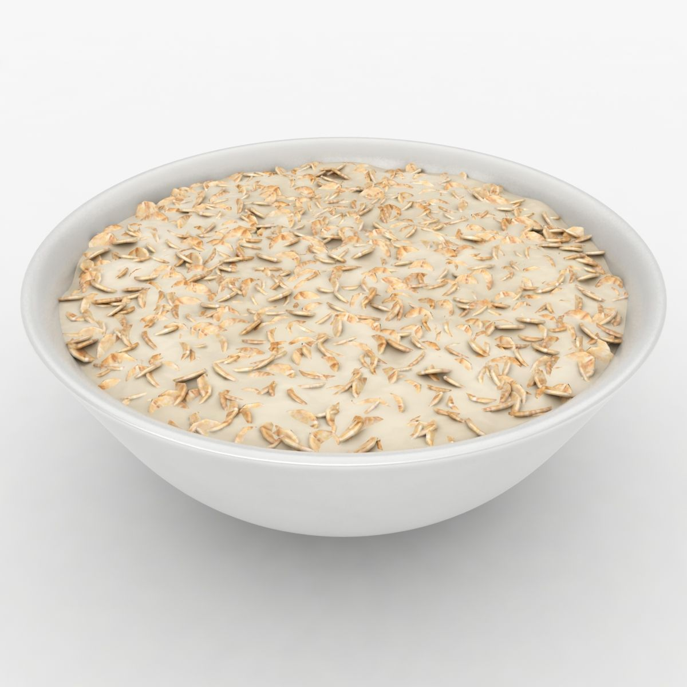

Recipe: Oatmeal

Oatmeal, the power meal you've never heard of.
Oatmeal is quite simple to make, and only takes ~15 minutes tops. Here is a simple guide on how to make chocolate flavored oatmeal.
Ingredients:
- 7 scoops Quaker Oats
- 1 tsp raw grade A honey
- 1 tbsp Cinnamon
- 1 tbsp Nutmeg
- 4 tbsp Nestle Chocolate Milk Powder
- 2 cups low-fat milk
Step-by-Step Instructions:
- Pour both cups of milk into a small pot
- Add all 7 scoops of Oats
- Add Chocolate Milk Powder
- Add Cinnamon
- Add Nutmeg
- Turn stove up to medium-high
- Add honey
- Mix thoroughly
- Let it cook for ~10 minutes
- Pour into a bowl and enjoy!